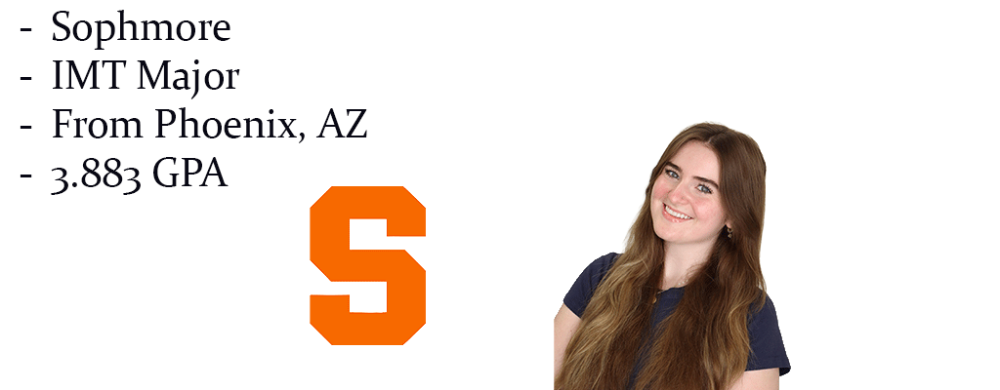

My name is Maureen Harrington. I’m an Information Management and Technology major with an interest in project management and pursuing another degree in advertising.

During my first year at college, I made the Dean's List for the Fall 2025 and Spring 2026 semesters, maintained a GPA of 3.887, and became a Success Scholar.
I love to work out, specifically going on walks/runs, and taking Pilates classes. I also love listening to music and enjoy going to concerts with my friends when I can. Some of my favorite shows include The Office, Gilmore Girls, and Love Island. My favorite book and movie series of all time is Harry Potter, but the 4th one is the best in my opinion. Both of my parents are Irish, my dad came to the US from Ireland after he graduated college, and my mom grew up in New York. I have one little sister, Emily, and she’s currently in 8th grade. I have one cat, his name is Milo, and he’s 1! One fun fact about me is that I used to decorate cakes in high school for my job, so I consider it a hidden talent of mine.
My favorite TV shows: